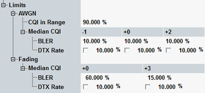

The limit section defines limits for the results of the "HSDPA CQI" measurement.
3GPP TS 34.121 specifies various test cases related to this measurement.
The default values are the limits specified in standard.
The limits for the AWGN and fading test cases can be set independently:

Specifies the minimum percentage of measured CQI values, that fall in the range (median CQI – 2) ≦ median CQI ≦ (median CQI + 2).
This limit applies only to the stage 1 of AWGN test case.
Remote command:- AWGN test case:
For the BLER at median CQI above the limit, the BLER at median CQI - 1 must be below the limit.
For the BLER at median CQI below the limit, the BLER at median CQI + 2 must be above the limit. - Fading test case:
Upper BLER limit at median CQI and median CQI + 3.
Defines the maximum percentage of HSDPA subframes that the UE answers with DTX. The limit check can be enabled and disabled.
For AWGN test case, the limit applies to the values acquired at median CQI - 1, median CQI and median CQI + 2.
For fading test case, the limit applies to the values acquired at median CQI and median CQI + 3.
Remote command: